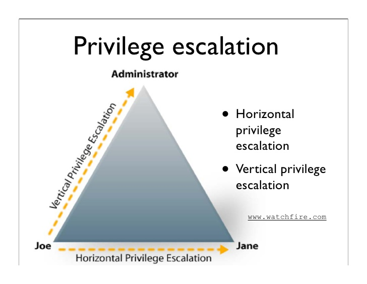

Each and every operating system has some kind of access mechanism. Obiously, it's not a great idea to let your 5 year old daughter delete SYSTEM32 from your windows machine. To combat such events, every user is granted different privileges. These privileges include reading and writing files, executing programs and much more, but these are the most importatnt. Privilege escalation is the process of acquiring privileges you don't have, or only users from higher status have them (like an administrator).
Some times your aim is to become an other user to get their privileges. This is called horizontal privilege escalation, you're not becoming a user with higher status, but simply another user who might have different privileges. If you're trying to get root privileges and become an administrator user, you're going for a vertical privilege escalation.
Below you'll find a list of different techniques of privilege escalation. Read the list, try to understand and remember it and if you're in dire need of privilege escalation and you're lost or don't remember your options, return to this page and check the list.
SUID programs